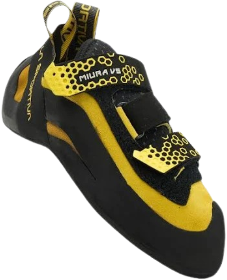
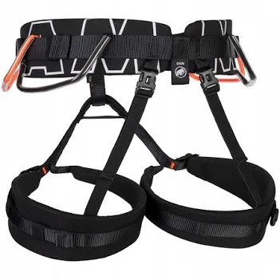
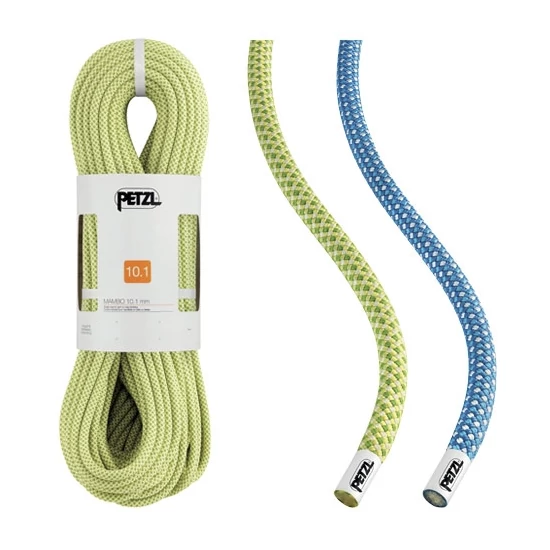
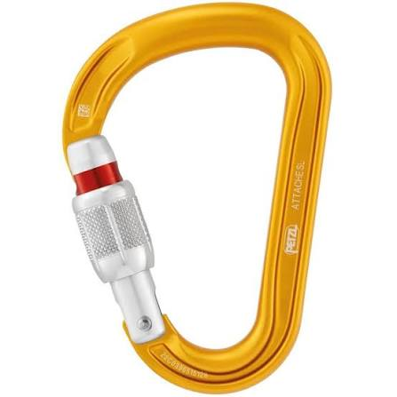
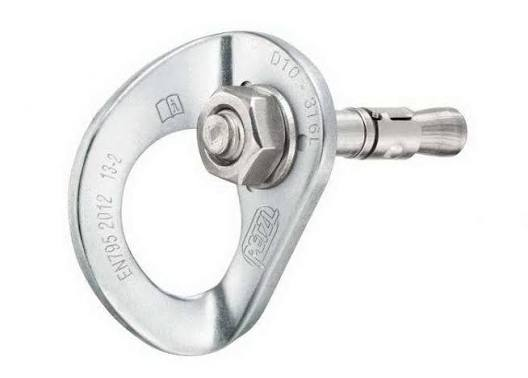
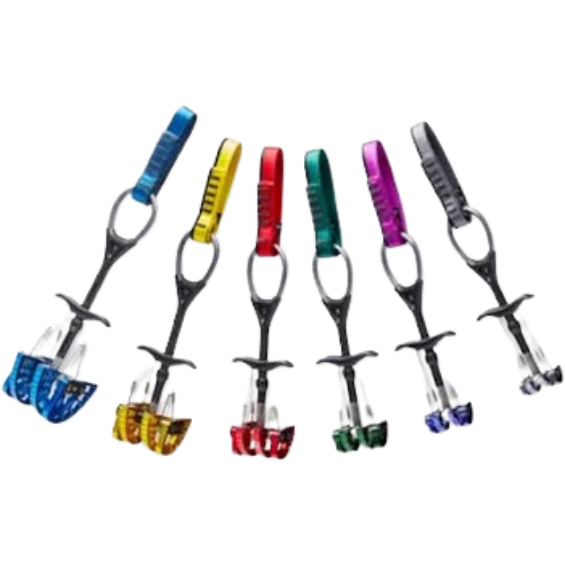
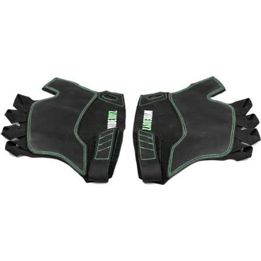
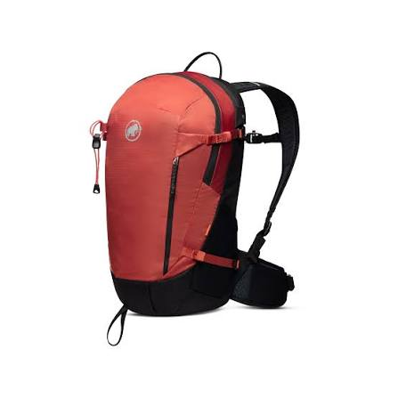

Szükséges eszközök
A falmászás során használt felszerelések közé tartoznak a következők:
- Mászócipő: speciális cipő, amely segít a lábfej stabilitásában és a tapadásban.
- Hám: biztonsági eszköz, amelyet a mászó visel, és amelyhez a kötél csatlakozik.
- Kötél: erős, rugalmas kötél, amely biztosítja a mászót a leesés ellen.
- Karabinerek: fém eszközök, amelyek segítségével a kötelet rögzítik a biztosító pontokhoz.
- Szögek, nittek, kampók: ezek segítségével rögzíthetők a biztosító pontok a falon.
- Friend: repedésekbe behelyezhető speciális rögzítőeszköz.
- Repedésmászókesztyű: védi a kezet a repedéseknél.
- Mászófelszerelés táska: praktikus tárolóeszköz az összes felszerelés számára.







